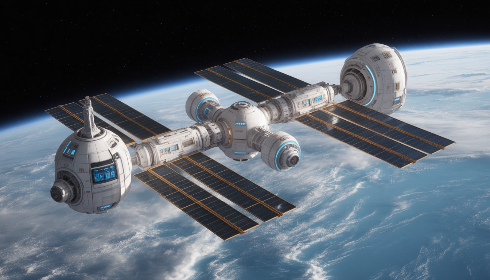
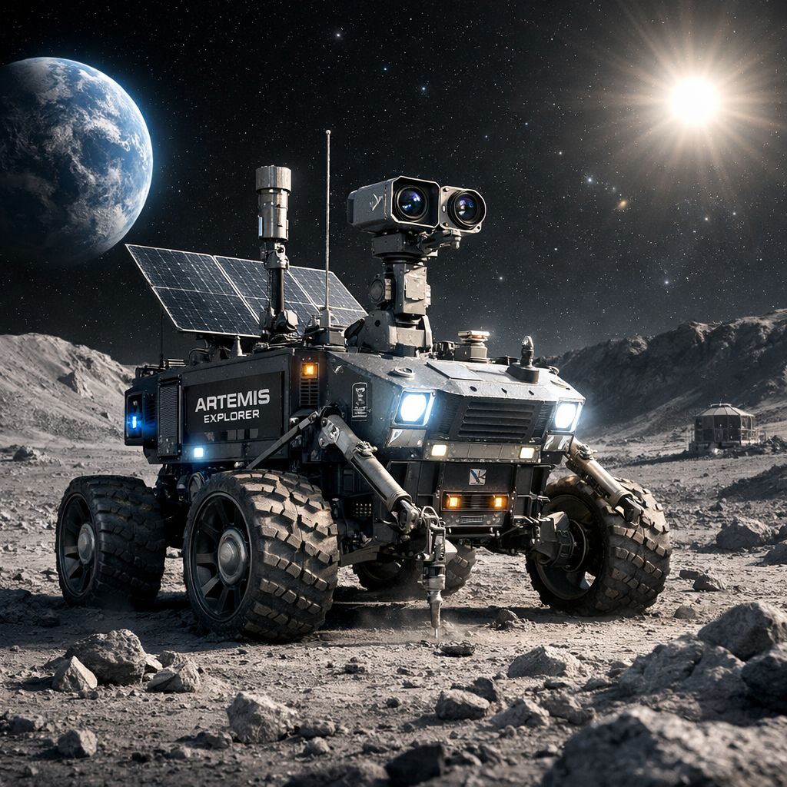
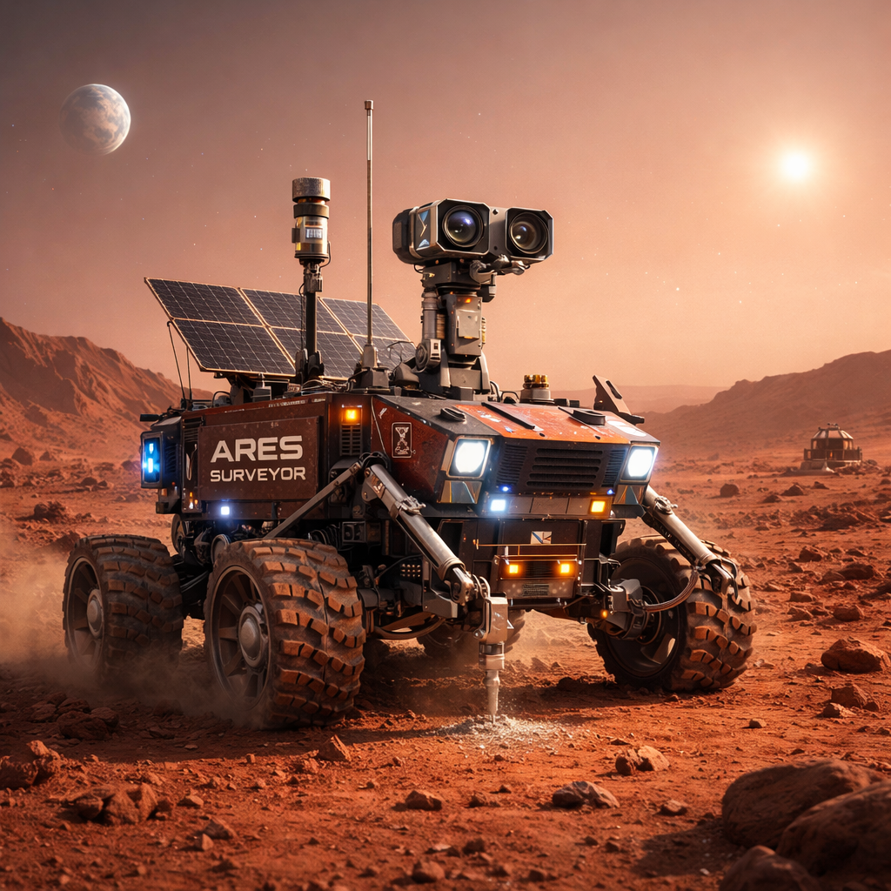
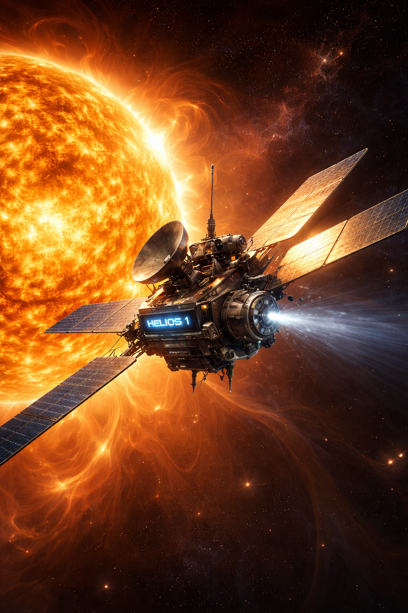
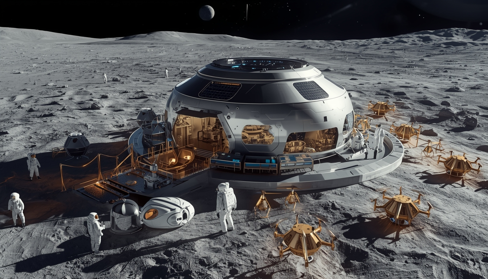
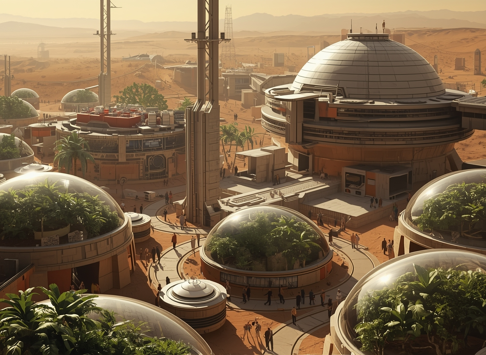
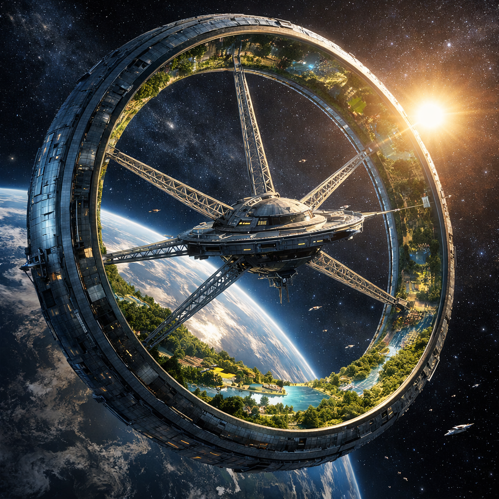
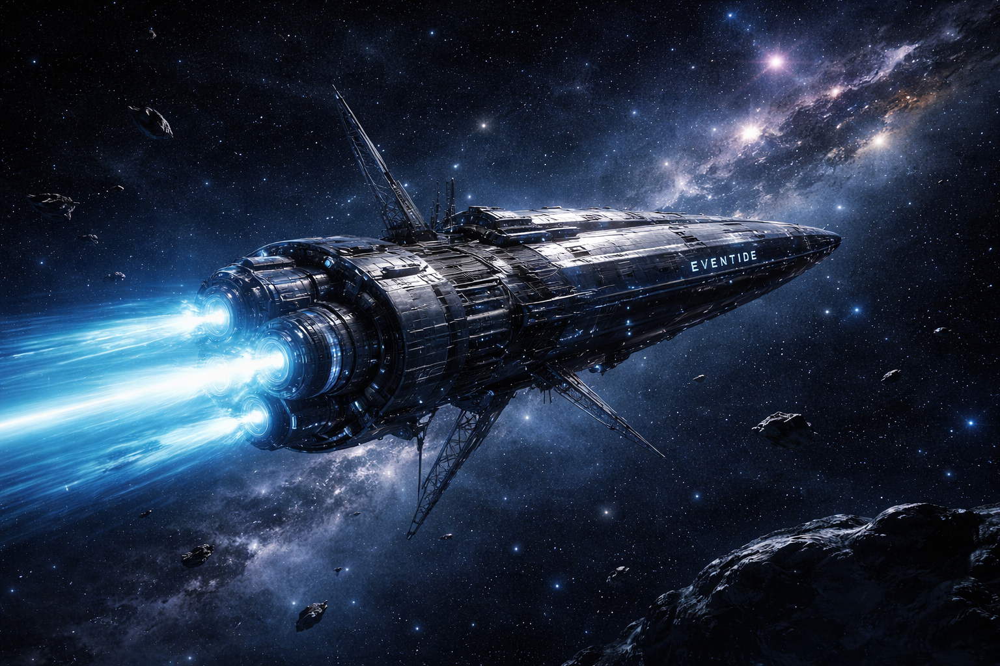

Strategic Expansion Beyond Earth Orbit and Toward Interstellar Horizons

Habitat One will replace the ISS as a modular orbital platform supporting advanced AI laboratories, zero-gravity manufacturing, deep-space docking systems, and long-duration habitation. It establishes a permanent commercial and scientific presence in low Earth orbit.

Autonomous lunar rover mission focused on mapping the south pole region, analyzing regolith composition, detecting subsurface ice, and gathering radiation data to support future Selene Prime settlement infrastructure.

Advanced robotic exploration system deployed to identify stable landing zones, study water-ice deposits, map terrain hazards, and conduct atmospheric analysis in preparation for long-term human habitation under Ares Dominion.

High-velocity solar research probe designed to study solar winds, radiation patterns, and deep-space propulsion testing under extreme thermal conditions, strengthening the foundation for Project Eventide.

Selene Prime is a permanent lunar base positioned near the Moon’s south pole, enabling resource extraction, radiation-shielded habitation, and serving as a staging ground for deep-space missions.

Ares Dominion is a self-sustaining Martian colony powered by hybrid nuclear and solar systems, focused on long-term habitation, planetary research, and terraforming technologies.

AstraRing is a conceptual 100-kilometer rotating megastructure designed to create artificial gravity through centrifugal force, integrating ecosystems, urban settlements, and large-scale space habitation.

Project Eventide explores theoretical antimatter propulsion systems aimed at enabling interstellar missions toward Proxima Centauri and, conceptually, the nearest known black hole to Earth. While currently theoretical, this initiative represents ZSI’s long-term ambition to transcend solar-system boundaries.
The advanced megastructure and interstellar initiatives outlined above — including AstraRing and Project Eventide — represent long-term conceptual research programs. These missions are grounded in theoretical physics and speculative propulsion studies. Their realization depends on future scientific breakthroughs, global collaboration, and sustained innovation.